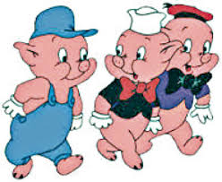
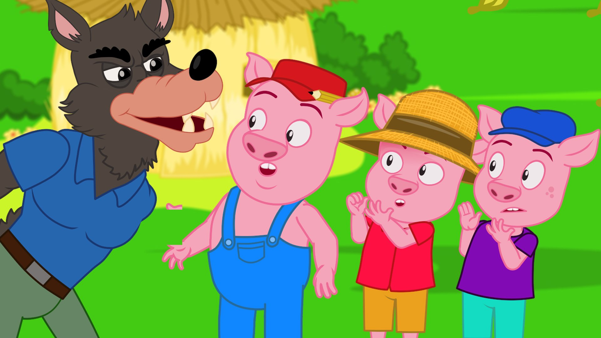

ÜÇ KÜÇÜK DOMUZCUK MASALI
Bölüm 1Bölüm 1
Bir zamanlar, ormanın derinliklerinde üç küçük domuzcuk yaşardı. Biri, büyüyünce kendi evini yapmaya karar verdi. En büyük domuzcuk, güçlü ve hızlı bir şekilde inşa etmeyi seviyor, sağlam bir ev yapmak istiyordu. Orta büyüklükteki domuzcuk ise biraz daha temkinliydi ve evini yaparken hem sağlamlık hem de hız arasında dengede dağılmayı tercih etti. En küçük domuzcuksa, ne kadar zaman alırsa alsın, sağlam ve güvenli bir ev yapmak ist İlk domuzcuk samanları bir araya toplandı ve kısa sürede bir saman ev yaptı. Orta büyüklükteki domuzcuk, odunları kesip, düzgünce yerleştirerek bir odun ev yaptı. En küçük domuzcuk ise taşlar yığarak, uzun süren bir ürünün ardından büyük Bir gün, korkunç bir kurt ormanın derinliklerinden ayrılan, domuzcukların evlerine doğru ilerlemeye başladı.
Bölüm 2
urt, ilk olarak saman evin önüne geldi. Kapıyı hızlı çekme ve “Ey domuzcuk, kapıyı aç! Yoksa nefesimle evini yıkacağım!” diye bağırdı. Saman evin içinde korkan domuzcuk, “Lütfen git! Beni yakalayamazsın!” diye yalvardı. Ancak kurt derin bir nefes aldı ve güçlü bir şekilde üfleyerek saman evi uçurdu. Samanların çevresine savruldu, domuzcuk kaçtı, a Kurt, “Bir tane daha! Hem biraz daha sağlam!” kendin yap
Bölüm 3
Kurt, odun evin önüne geldiğinde, aynı şekilde kapıyı çekip tehdit etti: “Ey domuzcuk, kapıyı aç! Yoksa bu ev de gidecek!” Orta büyüklükteki domuzcuk, biraz daha güvenli olduğunu gösteren odun evinde sığınaktı. Ama kurt, yine derin bir nefes aldı ve büyük bir kuvvetle üfleyerek odun evini de yerle bir etti. İki domuzcuk kaçıp, küçük kardeşlerinin yanında, taş eve sığındılar.
Bölüm 4
Kurt, taş evine doğru yaklaşıyordu. “Bu sefer başarılı olamadım herhalde” dedi kendi kendine ama yine de kapıyı çalıp tehdit etti: “Ey domuzcuk, kapıyı aç! Yoksa bu evi de yıkarım!” Küçük domuzcuk, soğukkanlılıkla içeri baktı ve sadece “Gel bakalım, seni bekliyorum!” dedi. Kurt derin bir nefes aldı ama taş ev o kadar sağlamdı ki, üflemesi de sadece bir şey değişmedi. Kurt birkaç kez çalışmış, ama sonunda yorgunluktan tükenmişti. O kadar çok üflemişti ki, enerjisi tükenmiş ve yorgun bir şekilde başka yerde kalmak zorunda kalmıştı. Üç domuzcuk hesaplama evlerinde yaşamaya devam ettiler. Taş ev, onların sadece güvenlik değil, aynı zamanda birlikte güçlü birikimleri de mümkün kılar. Zaman zaman diğer orman hayvanları da çiftçiliğe yardım etmek için geldiler ve domuzcuklar, her zaman birlikte ve sevgiyle güçlü bir toplum kurdular. Masal bitti, üç küçük domuzcuk mutlu ve güvende yaşadı